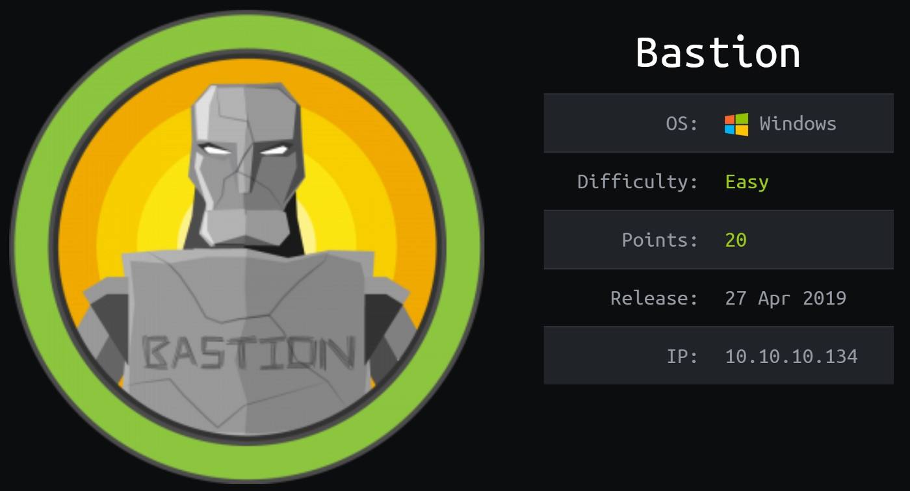

[HackTheBox]
htb{Bastion}
A bit old by now but one of my favorites boxes to root; since I had some familiarity with SMB.
We have the basic information for the box, It’s a Windows Machine we got IP and off we go..
Let's get into it! .

root@kek:/# ping bastion.htb PING bastion (10.10.10.134) 56(84) bytes of data. 64 bytes from bastion (10.10.10.134): icmp_seq=1 ttl=127 time=184 ms 64 bytes from bastion (10.10.10.134): icmp_seq=2 ttl=127 time=178 ms
Now we scan for ports and interesting stuff:
| nmap -sV -sC -sC -T4 -oA Bastion 10.10.10.134 Using nmap we got some interesting ports open: PORT STATE SERVICE VERSION 22/tcp open ssh OpenSSH for_Windows_7.9 (protocol 2.0) | ssh-hostkey: | 2048 3a:56:ae:75:3c:78:0e:c8:56:4d:cb:1c:22:bf:45:8a (RSA) | 256 cc:2e:56:ab:19:97:d5:bb:03:fb:82:cd:63:da:68:01 (ECDSA) |_ 256 93:5f:5d:aa:ca:9f:53:e7:f2:82:e6:64:a8:a3:a0:18 (ED25519) 135/tcp open msrpc Microsoft Windows RPC 139/tcp open netbios-ssn Microsoft Windows netbios-ssn 445/tcp open microsoft-ds Windows Server 2016 Standard 14393 microsoft-ds Service Info: OSs: Windows, Windows Server 2008 R2–2012; CPE: cpe:/o:microsoft:windows Soo two interesting ports we are going to check in detail are SMB and SSH; as a noobish guy at first I was trying to brute force SSH but after a while I decided to throw away the idea of an easy brute force ssh connection. I went for the SMB route; If we take a close look at nmap info; | smb-os-discovery: | OS: Windows Server 2016 Standard 14393 (Windows Server 2016 Standard 6.3) | Computer name: Bastion | NetBIOS computer name: BASTION\x00 | Workgroup: WORKGROUP\x00 |_ System time: 2020–05–26T04:39:56+02:00 | smb-security-mode: | account_used: guest | authentication_level: user | challenge_response: supported |_ message_signing: disabled (dangerous, but default) | smb2-security-mode: | 2.02: |_ Message signing enabled but not required | smb2-time: | date: 2020–05–25 22:39:57 |_ start_date: 2020–05–25 18:03:52Here we got two routes, we can directly check if we can use something like the good ol’ msf or smbmap;
Let’s go first with msf, we are going to use the scanner: auxiliary/scanner/smb/smb_enumshares.
msf5 > use auxiliary/scanner/smb/smb_enumshares
We set the options required:msf5 auxiliary(scanner/smb/smb_enumshares) > set rhost 10.10.10.134 rhost => 10.10.10.134 msf5 auxiliary(scanner/smb/smb_enumshares) > set showfiles yes showfiles => true
and Exploit/run!